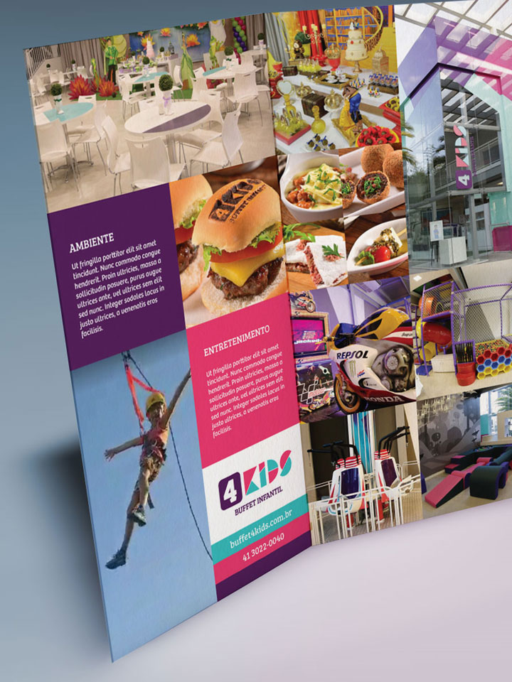
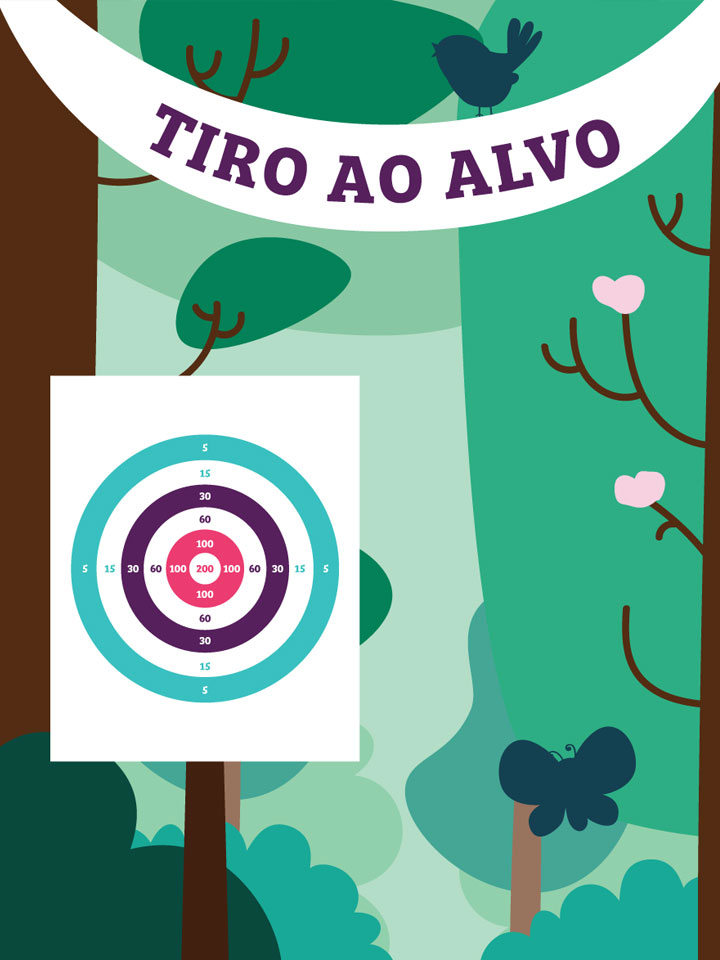
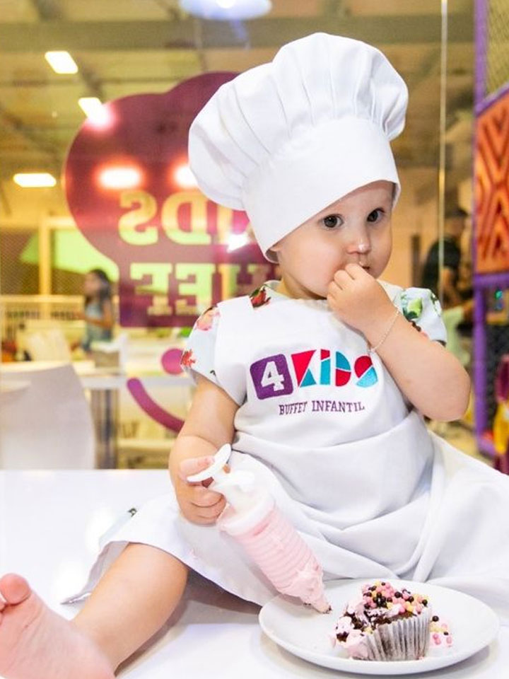
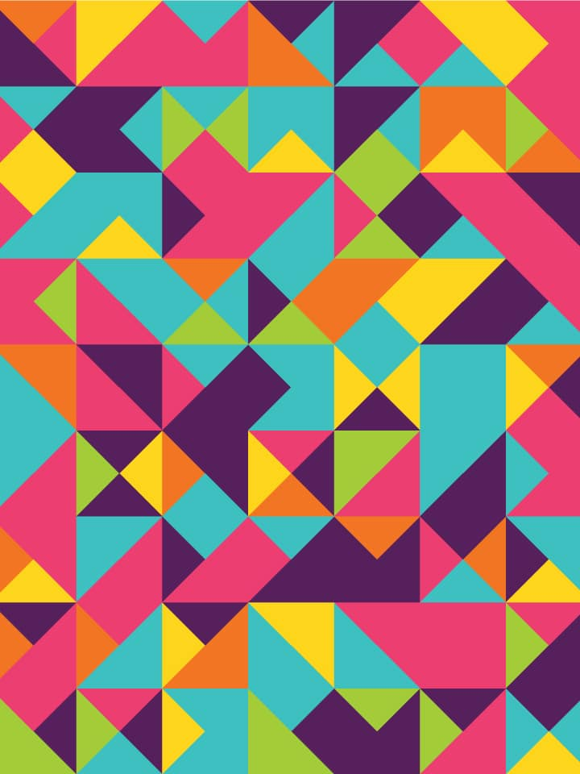
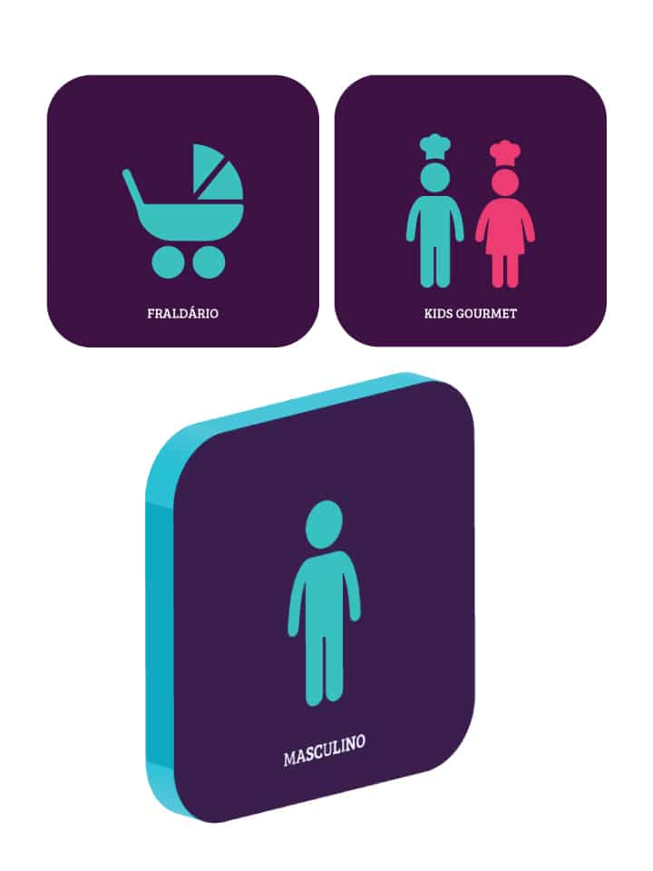
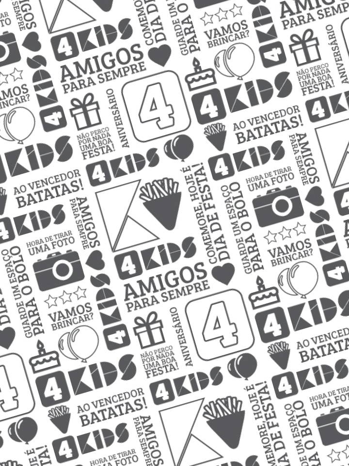

Exterior / Identidade / Logotipos






O cliente buscava algo menos “infantil”, sem no entanto perder a conexão com os primeiros anos de vida. O ponto de partida para o logotipo foram os blocos de construção. Esses blocos fazem parte da infância dos pais (público alvo primário) e aliados ao número 4, que em inglês na gíria é utilizado no lugar de for – e que se traduz “para” – cria identidade com o público pré-adolescente da geração digital.
O Buffet é para crianças de todas as idades, por isso possui espaço e atividades para os muito pequenos e atrações especiais para os que já estão crescidinhos. Destacamos a textura criada, os painéis decorativos, as artes personalizadas para os brinquedos eletrônicos, os uniformes e o material de divulgação (folders e propostas).
“São os detalhes que fazem as festas inesquecíveis.” O slogan do 4Kids está presente nos diversos materiais desenvolvidos pela Qualitá Design nesse projeto.